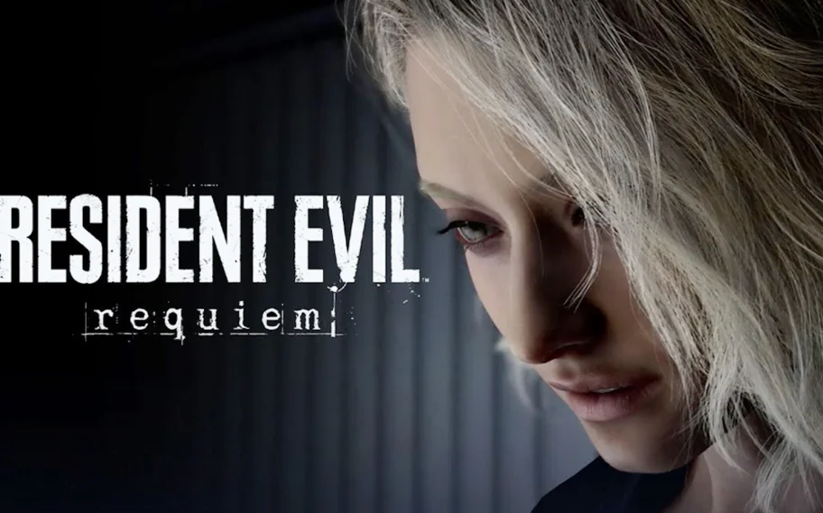

Resident Evil Requiem: Análise Completa do Novo Capítulo da Franquia
Crédito da imagem: Reprodução / Capcom
Resident Evil Requiem chegou como um dos títulos mais aguardados da Gamescom 2025. A Capcom promete um novo salto na franquia, misturando elementos clássicos do survival horror com inovações modernas.
Enredo e Ambientação
O jogo se passa em uma cidade devastada por uma nova mutação do T-Virus. A atmosfera é carregada de tensão, lembrando os primeiros títulos da saga, mas com uma narrativa cinematográfica que aprofunda ainda mais os personagens e suas motivações.
Jogabilidade
- Exploração: Mapas interconectados e cheios de segredos.
- Combate: Mecânicas de tiro mais fluidas e inimigos inteligentes.
- Sobrevivência: Recursos escassos e necessidade de escolhas estratégicas.
- Puzzles: Quebras-cabeças desafiadores que remetem aos jogos clássicos.
Gráficos e Áudio
Com a nova versão da RE Engine, Requiem apresenta cenários fotorrealistas, iluminação dinâmica e criaturas aterrorizantes em detalhes impressionantes. A trilha sonora e os efeitos sonoros elevam a imersão, fazendo o jogador sentir cada passo, respiração e sussurro no escuro.
Impacto e Expectativas
“Resident Evil Requiem é um retorno às origens, mas com a ambição de ser o título mais ousado da franquia.” — Críticos na Gamescom 2025
O título tem tudo para agradar veteranos e novos jogadores, trazendo de volta a essência do medo e da sobrevivência que consagrou a franquia.
Minha Opinião
Como fã de longa data da franquia, eu gostei muito da proposta de Resident Evil Requiem. A atmosfera lembra os clássicos, mas ao mesmo tempo traz um frescor moderno que estava faltando. O que mais me chamou atenção foram os gráficos e a ambientação: dá para sentir o clima pesado e o medo constante de virar a esquina.
A jogabilidade parece ter encontrado um bom equilíbrio entre ação e horror, e isso me deixa bastante animado. Se a Capcom realmente entregar tudo o que foi prometido, acredito que Requiem pode ser um dos melhores títulos da série nos últimos anos.